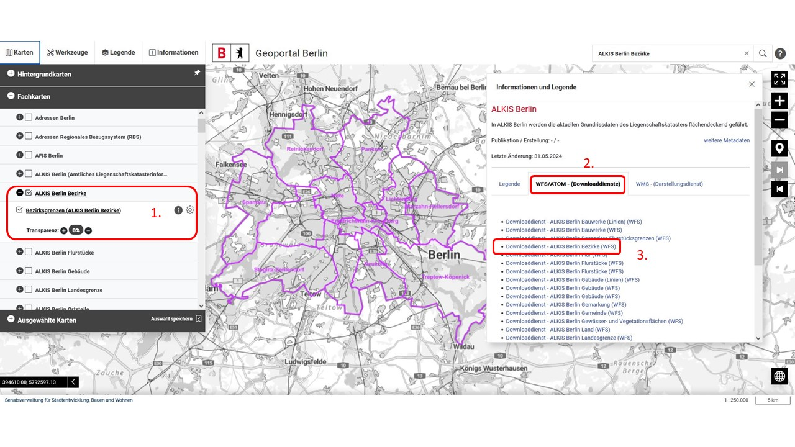
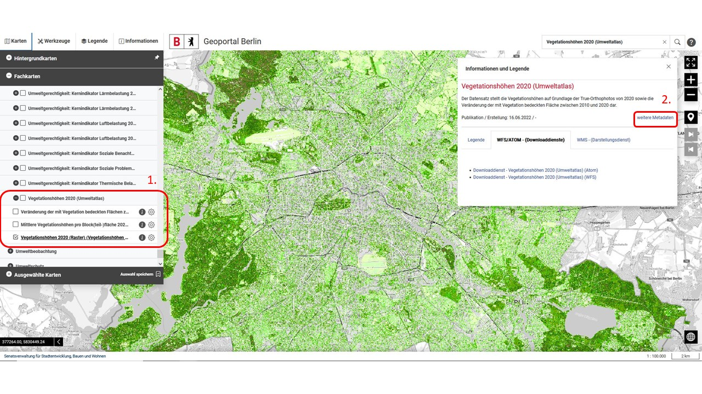
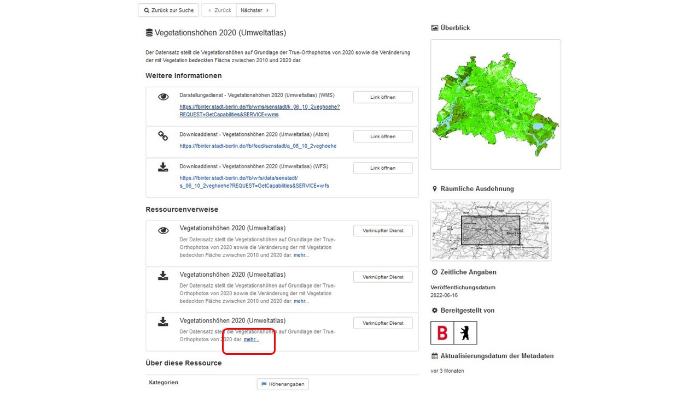
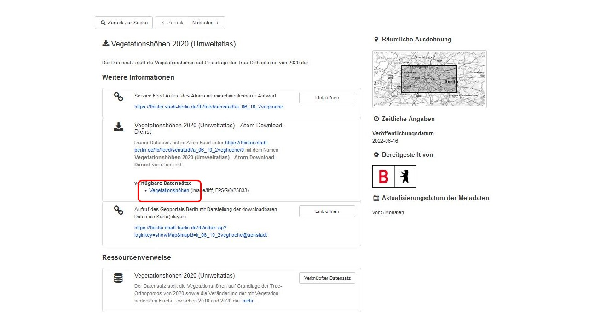
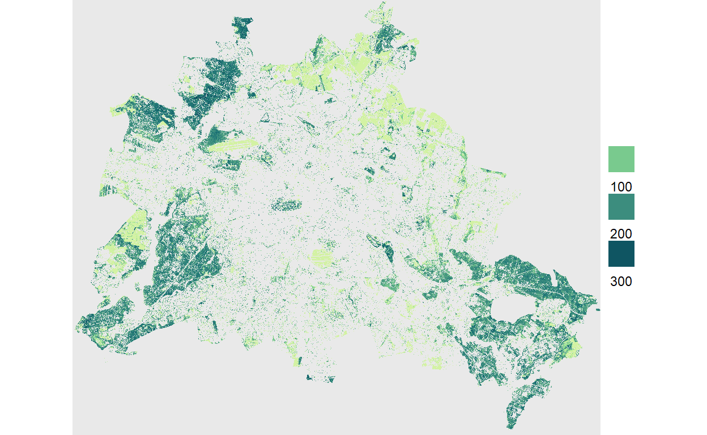

The {d6berlin} package provides several functions for the members of the Ecological Department of the IZW. Now two functions are added to the package: download_fisbroker_wfs() and download_fisbroker_atom().
install.packages("remotes")
remotes::install_github("EcoDynIZW/d6berlin")
install.packages("rcartocolor")
install.packages("stars")The Geoportal database
The Geoportal database is hosted by the Berlin Senate and provides several geographical data sets. The file formats differ and some data sets have just one of the file formats to offer. The file formats are WMS (Web Media Service: just like a png or jpg), WFS (Web Feature Service: Shapefiles) and ATOM (xml format: raster layers data). This function is only looking for WFS files (shapefiles), because these are the polygons, lines or points that we are looking for.
For using these two functions you have to select the layer you aim to download from the online data base.
WFS Data
As an example we will download the layer containing the districts of Berlin (“ALKIS Bezirke”):
Copy the name or browse for your desired data.
- Click on the layer
- Click on “WFS/Atom Downloaddienste”
- Right click on the layer you want to download and copy the link

url <- "https://gdi.berlin.de/services/wfs/alkis_bezirke?REQUEST=GetCapabilities&SERVICE=wfs"
data_wfs <- d6berlin::download_fisbroker_wfs(link = url)Reading layer `bezirksgrenzen' from data source
`https://gdi.berlin.de/services/wfs/alkis_bezirke?service=wfs&version=2.0.0&request=GetFeature&typenames=bezirksgrenzen&srsName=EPSG%3A25833'
using driver `GML'
Simple feature collection with 12 features and 7 fields
Geometry type: MULTIPOLYGON
Dimension: XY
Bounding box: xmin: 370000.8 ymin: 5799521 xmax: 415786.6 ymax: 5837259
Projected CRS: ETRS89 / UTM zone 33Nglimpse(data_wfs)Rows: 12
Columns: 8
$ gml_id <chr> "bezirksgrenzen.1", "bezirksgrenzen.2", "bezirksgre…
$ objectid <int> 1, 2, 3, 4, 5, 6, 7, 8, 9, 10, 11, 12
$ lan <chr> "11", "11", "11", "11", "11", "11", "11", "11", "11…
$ namlan <chr> "Berlin", "Berlin", "Berlin", "Berlin", "Berlin", "…
$ gem <chr> "003", "004", "010", "002", "012", "007", "011", "0…
$ namgem <chr> "Pankow", "Charlottenburg-Wilmersdorf", "Marzahn-He…
$ name <chr> "11000003", "11000004", "11000010", "11000002", "11…
$ geom <MULTIPOLYGON [m]> MULTIPOLYGON (((399003.5 58..., MULTIPOLYGON (((387…ggplot() +
geom_sf(data = data_wfs, aes(fill = namgem)) +
rcartocolor::scale_fill_carto_d(palette = "Bold")
You got a spatial layer which you can save to disk or to use it directly.
WFS Data - special case
In some cases you’ll get an unusual geometry type like “COMPOUNDCURVE”. With the following you can transform the data to the desired geometry type:
For example “Straßenabschnitte - Verkehrsobjekte des Regionalen Bezugssytems (RBS)” contains this unusual geometry type.
roads <- d6berlin::download_fisbroker_wfs("https://gdi.berlin.de/services/wfs/rbs_strab?REQUEST=GetCapabilities&SERVICE=wfs")Reading layer `rbs_strab' from data source
`https://gdi.berlin.de/services/wfs/rbs_strab?service=wfs&version=2.0.0&request=GetFeature&typenames=rbs_strab&srsName=EPSG%3A25833'
using driver `GML'
Simple feature collection with 45979 features and 10 fields
Geometry type: COMPOUNDCURVE
Dimension: XY
Bounding box: xmin: 368169.1 ymin: 5799583 xmax: 415509.7 ymax: 5837197
Projected CRS: ETRS89 / UTM zone 33Nroads_coll <- sf::st_cast(roads, "GEOMETRYCOLLECTION") # transform to GEOMETRYCOLLECTION
roads_lines <- sf::st_collection_extract(roads_coll, "LINESTRING") # and now to LINESTRINGHint: You may find the geometry type in the description of the data.
roads_linesSimple feature collection with 45979 features and 10 fields
Geometry type: LINESTRING
Dimension: XY
Bounding box: xmin: 368169.1 ymin: 5799583 xmax: 415509.7 ymax: 5837197
Projected CRS: ETRS89 / UTM zone 33N
First 10 features:
gml_id gisid strnr strname strabnr
1 rbs_strab.0000110 0000110 00001 Aachener Straße 10
2 rbs_strab.0000120 0000120 00001 Aachener Straße 20
3 rbs_strab.0000130 0000130 00001 Aachener Straße 30
4 rbs_strab.0000210 0000210 00002 Aalemannufer 10
5 rbs_strab.0000220 0000220 00002 Aalemannufer 20
6 rbs_strab.0000230 0000230 00002 Aalemannufer 30
7 rbs_strab.0000240 0000240 00002 Aalemannufer 40
8 rbs_strab.0000250 0000250 00002 Aalemannufer 50
9 rbs_strab.0000310 0000310 00003 Aarauer Straße 10
10 rbs_strab.0000410 0000410 00004 Aarberger Straße 10
strabtypname bez bezname ort ortname
1 Strasse 04 Charlottenburg-Wilmersdorf 0402 Wilmersdorf
2 Strasse 04 Charlottenburg-Wilmersdorf 0402 Wilmersdorf
3 Strasse 04 Charlottenburg-Wilmersdorf 0402 Wilmersdorf
4 Strasse 05 Spandau 0507 Hakenfelde
5 Strasse 05 Spandau 0507 Hakenfelde
6 Strasse 05 Spandau 0507 Hakenfelde
7 Strasse 05 Spandau 0507 Hakenfelde
8 Strasse 05 Spandau 0507 Hakenfelde
9 Strasse 06 Steglitz-Zehlendorf 0602 Lichterfelde
10 Strasse 06 Steglitz-Zehlendorf 0602 Lichterfelde
geom
1 LINESTRING (385604.2 581572...
2 LINESTRING (385828.4 581566...
3 LINESTRING (385840 5815916,...
4 LINESTRING (378870 5826305,...
5 LINESTRING (378949.6 582630...
6 LINESTRING (379021.6 582629...
7 LINESTRING (379092.9 582629...
8 LINESTRING (379505.4 582625...
9 LINESTRING (383710.1 580988...
10 LINESTRING (384467.3 580975...ATOM Data
As an example we will download a raster of vegetation heights (“Vegetationshöhen 2020 (Umweltatlas)”):
- Click on the layer
- Click on “weitere Metadaten”

Look for the data set which contains the raster data and click on “mehr…”
 Find the downloadable data and eaither download the data directly or copy the download link for the next step.

url <- "https://fbinter.stadt-berlin.de/fb/atom/Vegetationshoehen/veghoehe_2020.zip"
data_atom <-
d6berlin::download_fisbroker_atom(
zip_link = url,
path = here::here("_posts", "d6berlin-fisbroker", "man"),
name = "vegetation_heights"
)
glimpse(data_atom)S4 class 'SpatRaster' [package "terra"]data_atom_10 <- terra::aggregate(data_atom, 10)ggplot() +
stars::geom_stars(data = stars::st_as_stars(data_atom_10)) +
coord_sf(expand = FALSE) +
rcartocolor::scale_fill_carto_c(
palette = "Emrld", name = NULL,
guide = guide_legend(label.position = "bottom")
) +
theme_void()
A shortcut to plot this kind of data is the plot_qualitative_map() function from our dedicated {d6geodata} package. You can install this package with devtools::install_github(“EcoDynIZW/d6geodata”).
d6geodata::plot_quantitative_map(tif = data_atom_10)